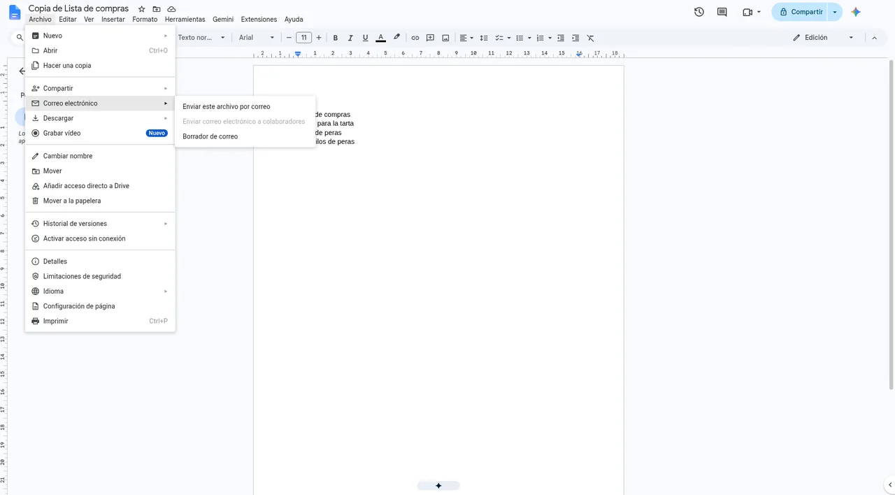
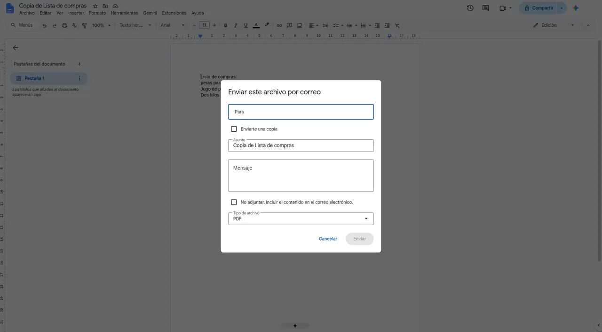
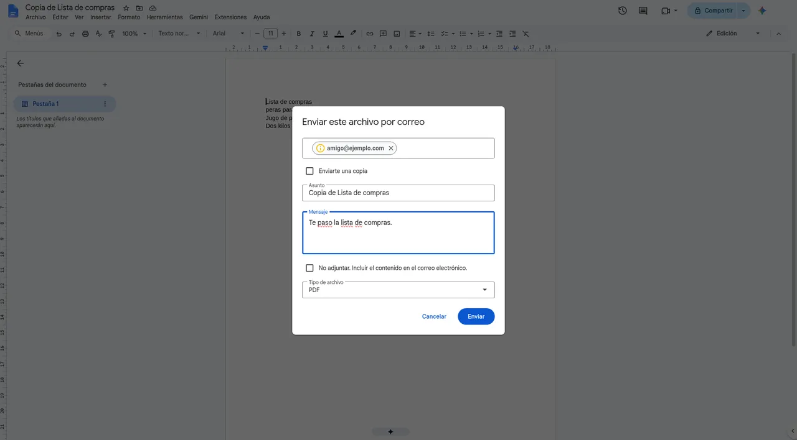
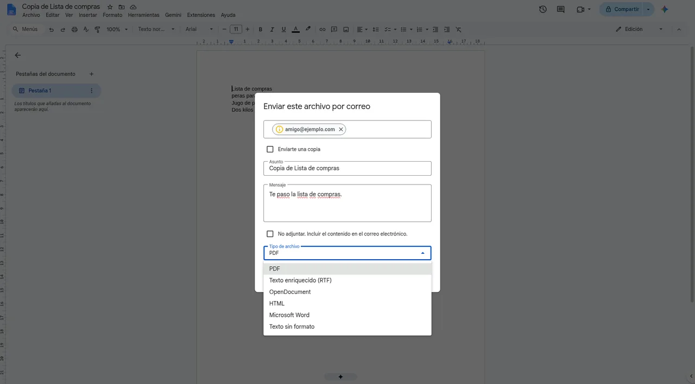
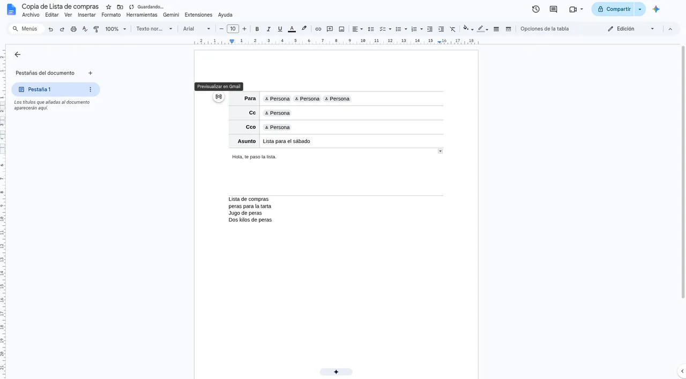

Curso de Google Documentos › Archivo › Lección 5
Lección 5 de 53 · menú Archivo
Cómo enviar un Google Doc por correo (PDF o Word)
Fecha del video: · Programado
¿Querés mandar tu documento por correo sin salir de Google Docs? Así se hace desde el menú Archivo.
En el ejemplo usamos una copia de prueba de «Lista de compras». El correo que aparece es de ejemplo (amigo@ejemplo.com); no se envió ningún mail.
Paso 1: abrí Archivo → Correo electrónico → Enviar este archivo por correo
Andá a Archivo → Correo electrónico y tocá «Enviar este archivo por correo». Se abre la ventana para escribir el destinatario, el asunto y un mensaje.


Paso 2: escribí el correo y elegí el tipo de archivo
En «Para» escribí el correo de la persona. Si querés, sumá un mensaje o tildá «Enviarte una copia». En «Tipo de archivo» elegí el formato: PDF, Texto enriquecido (RTF), OpenDocument, HTML, Microsoft Word o Texto sin formato. Después tocá «Enviar».


Paso 3: correo a colaboradores y borrador de correo
«Enviar correo electrónico a colaboradores» se activa cuando ya compartiste el documento con otras personas. Con «Borrador de correo» armás el mail dentro del doc (Para, Cc, Cco y Asunto) y, si querés, lo abrís en Gmail con «Previsualizar en Gmail».

Mirá el Short
Estreno del Short: 23/11/2026 · 17:00 (hora Argentina)
Video relacionado: Google Docs: menú Archivo paso a paso (tutorial completo) — el video largo del menú Archivo (verlo en YouTube).
Fuente oficial: Ayuda de Editores de Documentos de Google. Capturas propias en un documento de ejemplo («Lista de compras»). El video usa voz generada con IA.